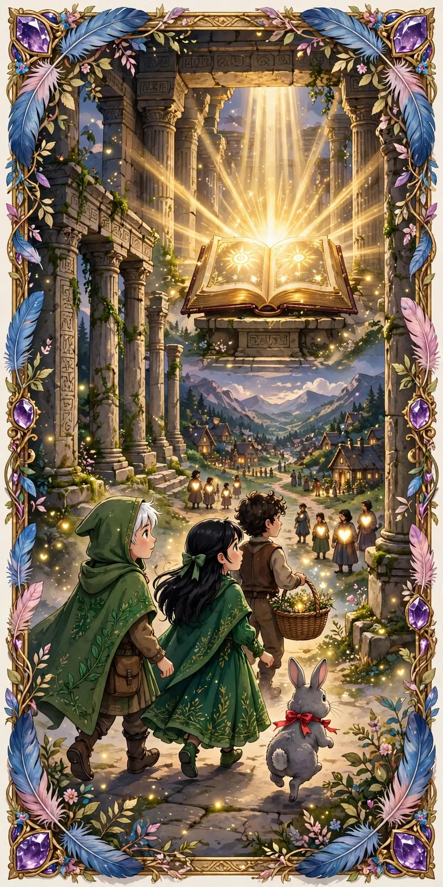

Introducción
El libro como faro
Mientras el pueblo de Liam y Elara seguía experimentando el impacto de las preguntas poderosas y las historias reveladas, el Gran Libro de Fábulas permanecía en el templo como un faro de sabiduría y guía. Los jóvenes guardianes sabían que las historias del libro no solo contenían lecciones, sino también claves para desentrañar la verdad sobre su comunidad. Decidieron regresar al libro para buscar más respuestas sobre su propia historia, con la esperanza de entender mejor la complejidad de su realidad actual.
